Case Study
Summary
More and more, people are storing and sharing information online using cloud storage applications, but these applications can become cluttered as the number of collaborators and items increases. cloudth!nk wants to enter the space as a new product that specifically serves the needs of young students, professionals, and artists who are looking for a platform that inspires creativity, knowledge-sharing, and efficient problem-solving, all while having a bit of fun.
My role: branding and visual design, user research, UX/UI
Deliverables: style guide, user stories and flows, user personas, content strategy, sitemap, wireframes, clickable prototype
Tools: Figma, InVision, Draw.io
Challenge
Because the cloud storage and organization market is already very saturated, a new competitor must be able to meet the needs of a particular audience and include features that differentiates itself from existing applications like Google Drive, Dropbox, Box, Evernote, Pinterest, etc. Our new product needs a clear target audience in mind, interesting and compelling features, and opportunities for growth.
Solution
Meet cloudth!nk, a modern and sleek cloud storage and organization application that invites students and young professionals to share and collaborate, harnessing creativity and future-centric brainstorming. cloudth!nk can be downloaded as either a desktop or mobile application for working on-the-go, wherever and whenever.
Process
Competitive Analysis
I completed a competitive analysis of top 3 competitors in the cloud storage and organization market: Google Drive, Dropbox, and Box.
Based on this analysis, these three cloud storage and organization platforms have remained successful for years because they capitalize on and leverage the needs of a large range of users from students to enterprises. Google Drive attracts any Google product user. Dropbox is suited for collaboration and for sharing work between creatives. Finally, Box caters its services to businesses who have specific security, data, and integration needs.
A new competitor must be able to draw upon the primary benefits and services that these cloud storage platforms offer to their users and audiences. Our product should be able to cater to a variety of creators and could perhaps offer a variety of pricing options and allow users to upload more content types like code or design files.
User Research
To gauge the potential target audience for our product, I first conducted user surveys to learn about people’s cloud storage application preferences, habits, wants, and needs. I surveyed 25 people and found that the 3 most popular cloud storage and organization apps are Google Drive (21, 95.5%), Dropbox (11, 50%), and Box (6, 27.3%), with Google Drive being 77.3% of survey participants’ favorite app.
About 91% of survey participants use a cloud storage app specifically to share and collaborate with others. Main reasons for using a cloud storage app for collaboration are its general helpfulness for daily life and work and its usefulness for specific projects, which led me to focus on work and collaboration features for our product.
User Personas
The survey led to the development of three specific user personas: students, young working artists, and young professionals.
User Stories
From the user research as well as additional secondary research, I created user stories for the three types of personas: students and young professionals and artists.
Across the board, high importance tasks involved signing in and out of the account as well as being able to upload/share/create different types of files. Moving forward, these high priority tasks, along with a combination of medium and low priority tasks, were incorporated into user flows.
Wireframes
Using the sitemap, content strategy, and user flows, I created wireframes for the application, which you can find by clicking on this Figma link. I focused on ensuring that essential features were present and grounded in the initial research phase.
Usability Testing
Next, I brought a clickable prototype in front of users to gather feedback and to understand user goals, needs, and pain points. I asked users to complete three tasks:
- Sign up for an account
- Create a new document
- Move a document to a new folder
From the results, I found that overall, users were able to complete the tasks with ease. However, the test participants indicated that the prototype was missing texts and images that could provide important or crucial information about the site and its various pages and options. Additionally, there was some confusion on whether some logos or icons were clickable. Moving forward, the data informed my branding decisions.
Visual Design
Branding
Drawing from the user research and competitive analyses completed up to this point, I brainstormed and drew sketches of potential logo options. Based on the personas and the general demographic the product is targeting, I knew we wanted something that was modern, minimal, and text-based, since most popular brands these days generally follow that trend.
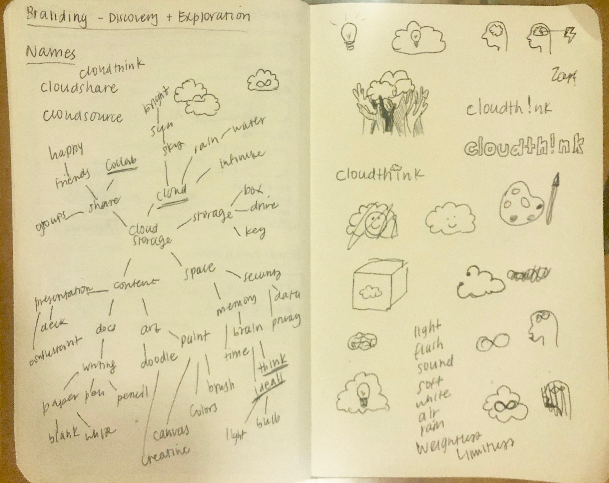I eventually honed in on one logo: cloudth!nk. Essentially, when users are on the site, they should feel empowered to solve their most complex problems through collaboration and brainstorming with others, as if there is no limit to their abilities.
empowering. collaborative. fun.
Young students and professionals need work to be fun. They need to be able to communicate with others and work well with literally anyone. As millenials explore and travel, push new ideas, and create progress, they will need a tool that will help them problem-solve in any space and at any time.
Color Palette
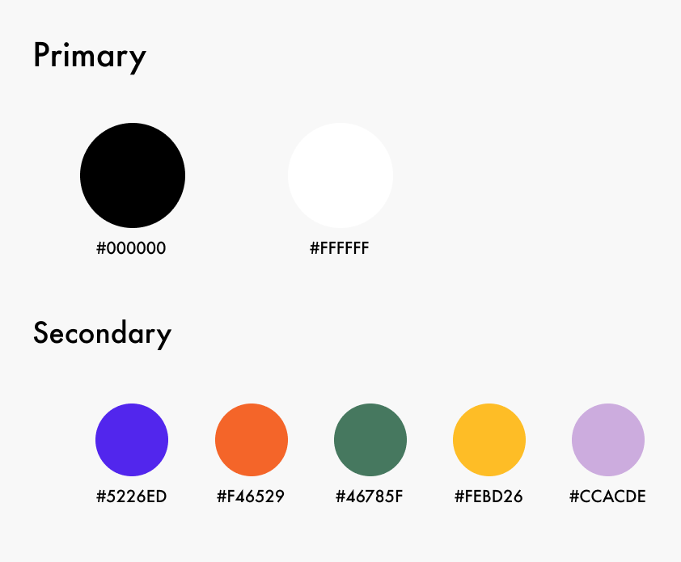Typography
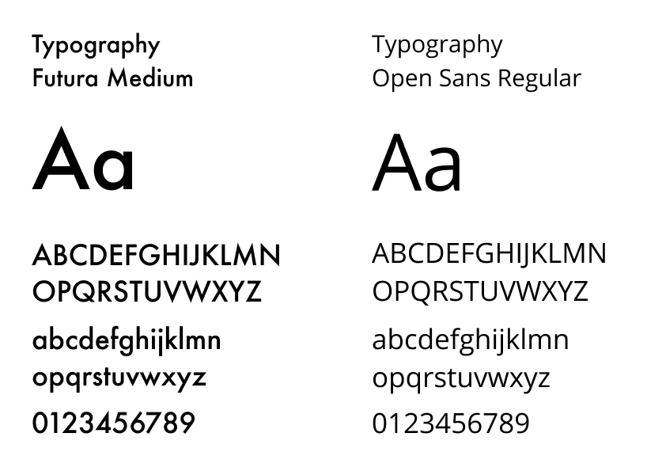Mockups
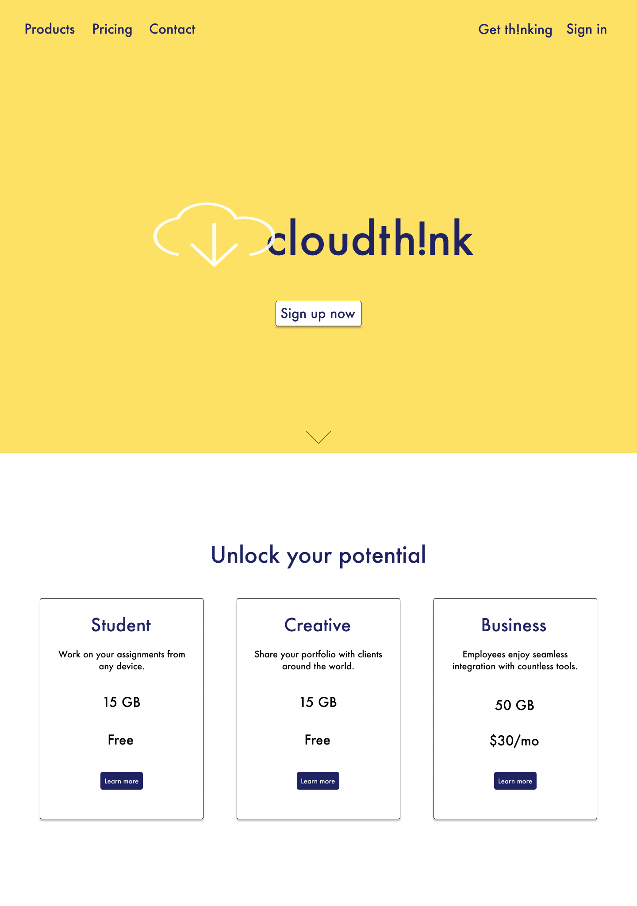 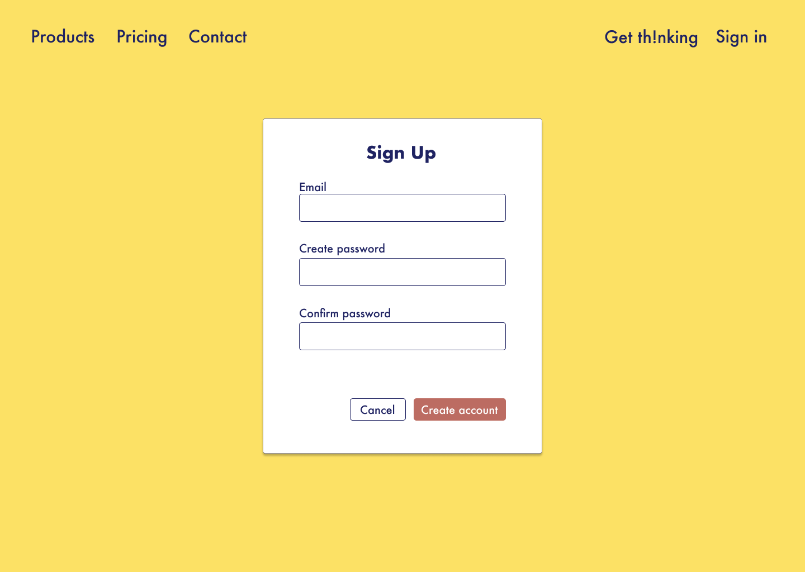 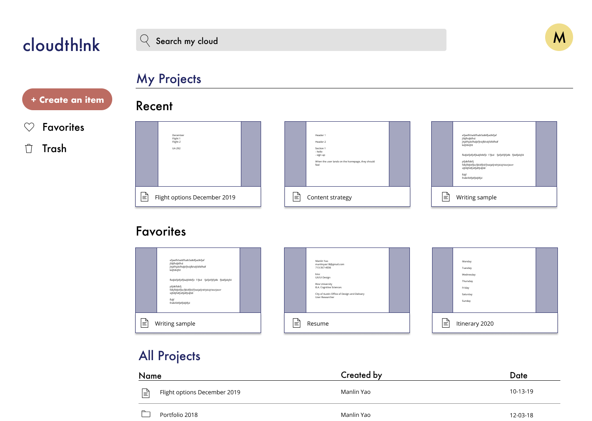 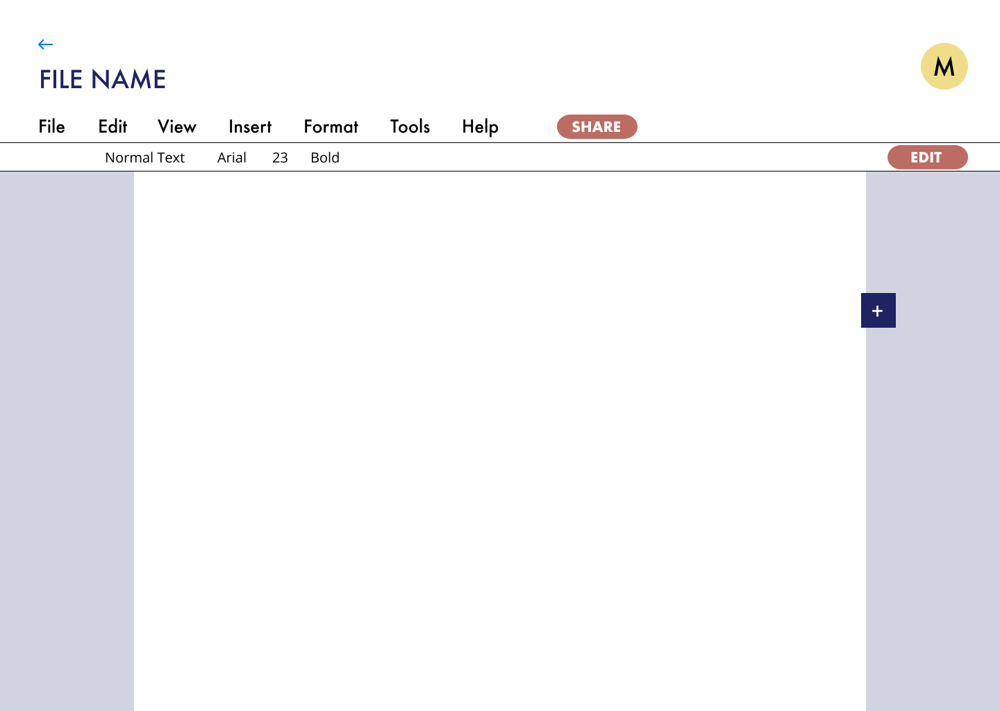In another round of testing and design critiques, I specifically focused on color choices, information hierarchy, heading styles, accessibility, and visual elements of the design. Also, I asked questions regarding the branding choices as well as how the branding is communicated.
What I learned:
- application has a clear layout is very simple and easy to understand, albeit plain
- moving documents to folders is confusing
- the layout is plan
- product information is insufficient
Final Mockups
Following the user testing, this final iteration centered heavily on elevating branding and visual design, which were applied to final mockups and prototypes. I applied new styles and colors that more closely resembled my initial moodboard and aesthetic direction, and addded necessary product information to provide more important context for users.
Changes include:
- reduction of the size of the boxes
- addition of a chat feature
- addition of labels that give users the bility to differentiate between their own projects and those shared with them
- addition of feature that allows users to see who’s working on documents live
Now, neither people nor documents will get lost in the mix.
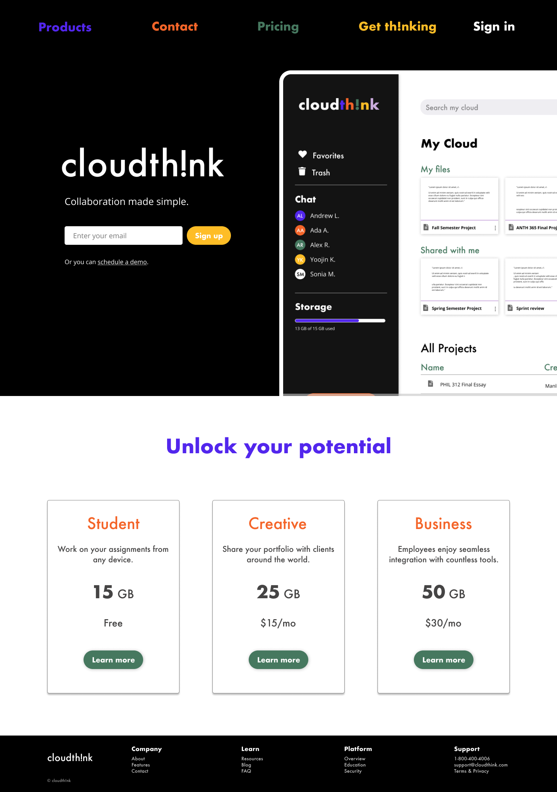 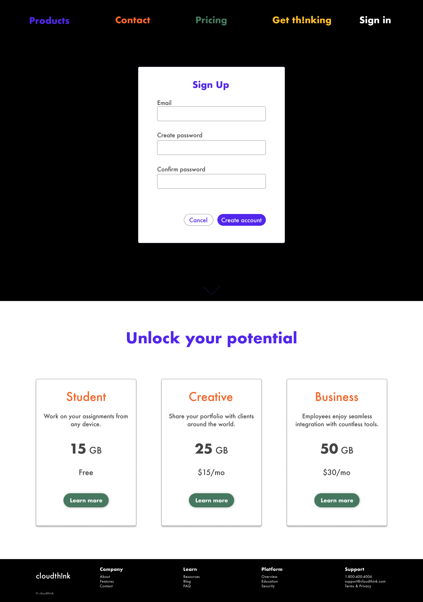 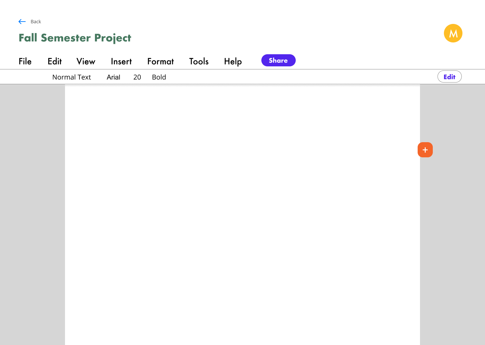
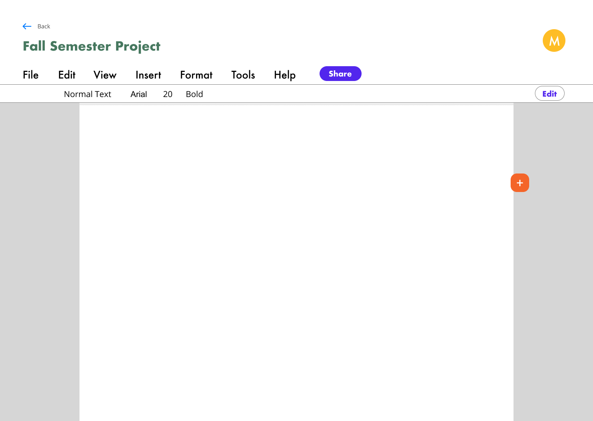
With cloudth!nk, cloud collaboration can be fun and social, without sacrificing efficiency and clean organization.
Conclusion
Although the project and the eventual product sprung out of an initial vision that lacked clarity, cloudth!nk leveraged the power of multiple rounds of continuous research and testing to refine its concept, branding, and services. Having to compete against multiple well-known and well-established apps like Google Drive, Dropbox, Box, etc. was relatively daunting and somewhat hampered the creative process in the sense that these brands have already solidified the best practices and the necessary features required to attract consumers, so it was difficult to think outside of the box, especially as a loyal user of Google Drive and Dropbox.
However, through the branding phases, I gained confidence in the belief that through styling and color choices, I had the power and the flexibility to build something that looks unique and different from what’s already out there. Through design, I can be bold and playful, characteristics that modern products absolutely need in order to succeed.